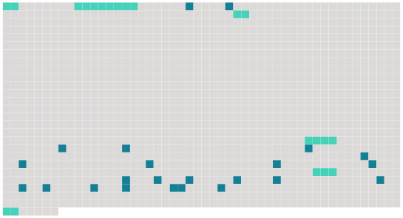

Longueur nb maillons : 29 mentions |
|
[L'un] , M.
Paul Péronel, était [un grand garçon mondain, galant et hardi] , homme à bonnes fortunes, [qui] savait attendre et choisir [ses] heures. [2 phrases]
Elle appelait [le premier] le « Capitaine Fracasse » et le second « Mouton Fidèle » ; elle finit par faire de celui -ci une sorte d'esclave attaché à ses pas, dont elle usait comme d'un domestique. [31 phrases]
[M. Paul Péronel] l'attendait dans le petit salon sans lumière. En lui touchant la main, [il] sentit qu'une fièvre la brûlait. [Il] se mit à causer à mi-voix, tendre et galant, berçant cette âme épuisée au charme de paroles amoureuses. Elle [l'] écoutait sans répondre, pensant à l'autre, croyant entendre l'autre, croyant le sentir contre elle, dans une sorte d'hallucination.
Elle ne voyait que lui, ne se rappelait plus qu'il existait un autre homme au monde ; et quand son oreille tressaillait à ces trois syllabes : « [Je] vous aime », c'était [lui] , l'autre, qui les disait, qui baisait ses doigts, c'était [lui] qui serrait sa poitrine comme tout à l'heure dans le coupé, c'était [lui] qui jetait sur ses lèvres ces caresses victorieuses, c'était [lui] qu'elle étreignait, qu'elle enlaçait, qu'elle appelait de tout l'élan de son coeur, de toute l'ardeur exaspérée de son corps. [1 phrases] [Le capitaine Fracasse] , à genoux près d'elle, la remerciait passionnément en couvrant de baisers ses cheveux dénoués. Elle cria : « Allez [-vous] -en, allez [-vous] -en, allez [-vous] -en!!
»
» [9 phrases]
Elle le reçut sans trouble et sans regrets, comprenant soudain qu'elle ne l'avait jamais aimé qu'en un songe dont [Paul Péronel] l'avait brutalement réveillée. |
 |
Il est possible de télécharger la ressource sur la page Ortolang |
Si vous avez des questions ou vous voyez des erreurs, merci d'envoyer un mail à silvia.federzoni89@gmail.com |